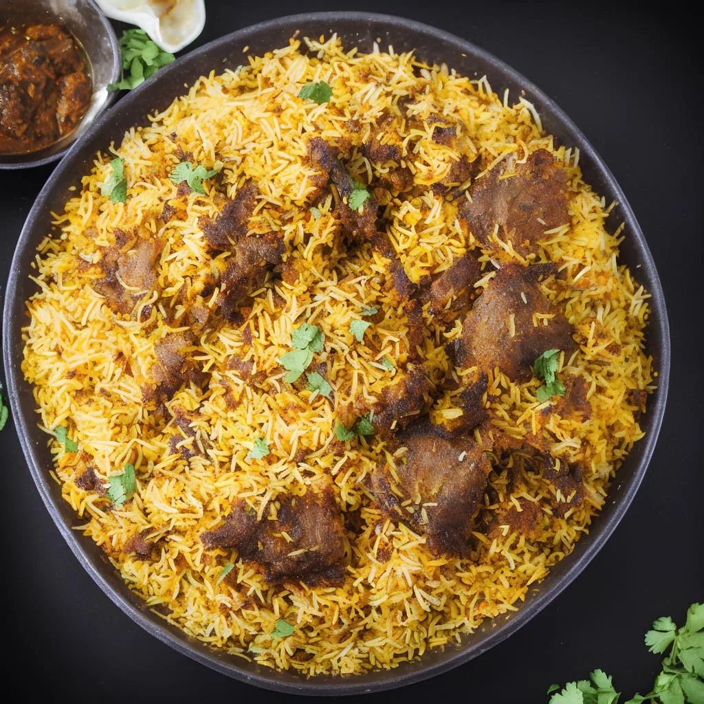

Mutton Biryani

From Times Food: This mutton biryani recipe is a must-try for people who are biryani fans. This easy lamb biryani recipe is suitable for bachelors and new cooks alike. Biryani is made in numerous ways in various regions of India. This traditional mutton biryani recipe brings you an easy way to prepare this succulent and flavourful dish at home. If you love a spicy biryani Hyderabadi or Lucknowi, you will definitely enjoy this mutton biryani recipe. This mutton biryani is not just popular for its taste but the method of cooking as well. There are 3 ways of cooking Mutton Biryani. One of the popular methods of preparing this biryani recipe is Hyderabadi Pakki Dum Mutton Biryani in which the mutton and rice are cooked separately and then steamed until the biryani is cooked completely in layers. Another method is cooking Kacchi Mutton Biryani (also known as Kacche gosht ki biryani), in which the mutton is marinated first and cooked with half-cooked rice in layers. Another one is cooking mutton biryani in a pressure cooker. Irrespective of the method used to prepare his delicacy, Mutton Biryani is a regal dish straight from the lands of the Nizams. The marination time of mutton can also vary in all these methods, which directly impacts the tenderness and the flavour of the meat. Think of any biryani recipe and you would realise that it takes a lot to prepare biryanis. However, if you have the will, it will be ready easily and will be flavourful as well. While preparing this delicacy, it is very important to choose the right rice for biryani. If you will not choose high-quality basmati rice, it will impact the texture and will hamper the taste as well. So, in order to make a mouth-watering Mutton Biryani, use basmati rice that has long grains. The longer the grain of basmati rice, the greater the flavour of the dish will be. You can also prepare this delicious recipe on festivals like Holi and impress your guests with your culinary skills. So, what are you waiting for? Try this Nizam’s delicacy and enjoy!